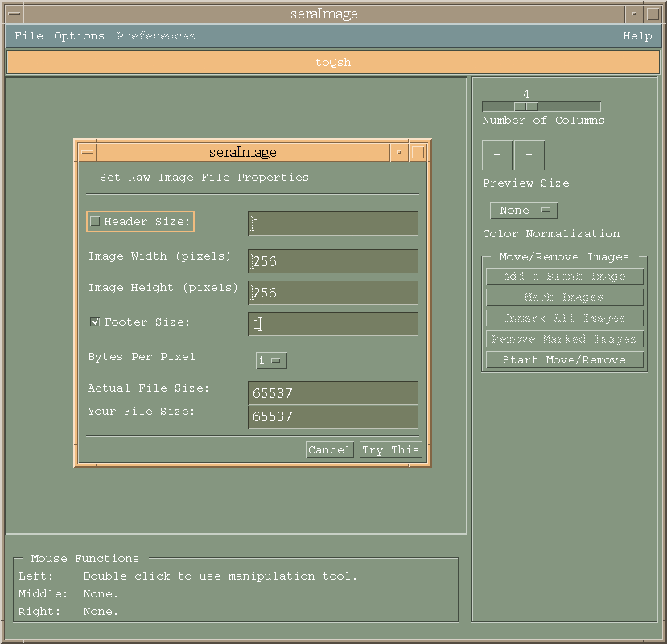

SERA:
Simulation Environment for Radiotherapy
Applications
User's Manual
Version 1C0

SERA:
Simulation Environment for Radiotherapy
Applications
User's Manual
Version 1C0

4. Image Formats and Preparation
In order to process these images, SERA must know the image format. At this time, SERA accepts either 8/16-bit 256x256 row-major image data or Qsh formatted images [6,7,8].
The Qsh file format was developed by Maguire and Noz to provide a common image format and incorporate data generated by image-processing into a picture archiving and communication system (PACS). The image file format is an adaptation of the AAPM standard image format and consists of an ASCII header file in the form of standard key-value pairs for its descriptive data and a second file composed of the N-dimensional array of pixel values. The header file might include the following information:
SERA has a module available which will convert
a variety of image formats, including the dicom3 format, into Qsh. This
same option also provides a convenient mechanism for editing existing Qsh
header files. The capability also exists to read multiple vendor imaging
modality data and present it in the Qsh format.
4.1. Image Formatting (seraImage)
Most of the treatment plans developed with SERA will begin with seraImage. Its basic function is to convert the original image format into the Qsh format, which is the internal format used among the SERA modules. The image formatter can be brought up by selecting the Sera Image button from the main menu (See Section 3.1). Alternatively, entering seraImage at the command line prompt will also bring up the image formatter's user interface, shown in Figure 4.1, with the File pulldown selected.

Figure 4.1: seraImage with File Button Slected
The File menu has the following parts, which will be discussed in turn in the following subsections:
Selecting Load QSH brings up the widget found in Figure 4.2. The widget allows viewing and editing of the required QSH keys.
Figure 4.2. Load QSH selection widget.
In addition, the user can specify any of the required QSH file header information which seraImage was unable to recognize from the original image file, so that if required, a new Qsh file containing this corrected information can be created. It is very important, especially in the case of univel-based geometries, that the image locations be properly set, and that the image-to-image distances be uniform. This can be checked with the Show/Edit Image Locations button in the right hand side of the widget. If necessary, the image-to-image distances can be edited, either one image at a time or by specifying a reference location for the first image and a uniform spacing. As with any editing feature in the SERA system, this must be done with extreme care, as it could destroy the fidelity of the model geometry.
4.2.2 Load Single Images Selection
Raw image files, each containing a single one- or two-byte image, can be viewed, edited, and converted to the QSH format with this option. In most cases, the user will have a group of raw image files in a single directory in the file system, such as depicted in the Select File widget shown Figure 4.3. The user can select the image files in the directory one at a time, all at once, grouped by a wildcard character, or as a grouping created by dragging the cursor through files listed in the second column of the widget under the Files subheading.
Figure 4.3. Load Single Images selection.
Once grouped, the selected files are loaded by pressing the button labeled with the >>> symbol and choosing the Apply button. At this time, seraImage will only deal with square image sets. A common image size is 256 pixels x 256 pixels x 1 byte. This will yield a file size of 65536 bytes for an image of one byte per pixel. Based on the image's file size, seraImage will make a guess at the image format, while providing the user the opportunity to change the image parameters.

Figure 4.4. Guess at Raw Image Format selection.
If the image contains more than just pixel information, the user can guess at either or both the header and footer sizes (see Figure 4.4). While this is far from a perfect solution, the user still can make several guesses at the image properties, until an acceptable display of the images is achieved.
This is a simple operation which allows the user to remove a current set of images in order to work with a new set of images.
4.2.4 Generate Raw Images Selection
This option is provided so that the user can extract individual raw image files from the QSH image (qim) file.
This option saves the current seraImage images as a Qsh formatted image set.
From this selection, the user can run the other modules of the SERA system.
The most recent version number is maintained at the central BNCT system site at Montana State University. As a convenience to the user, this option compares the version of the currently operating module with the most recent version available .
The Options menu has the following parts, which will be discussed in turn in following subsections:
Figure 4.5. Options Menu selection.
This option brings up the QSH key editing widget, shown in Figure 4.2, where the user can change the values of the required keys.
This option displays/undisplays the seraImage buttons on the right hand side of the main widget, in the case where screen space is limiting.
When this option is enabled, an informational message describing the buttons function appears in the space below the menu bar in the main widget as the cursor passes over the widget buttons.
4.3.4 Reverse Images Selection
This option simply reverses the display and file order of the current set of images.
4.3.5 Manipulate Images Selection
This option allows the user to rotate, translate, or scale a single image or the entire image set, as shown in Figure 4.6.
Figure 4.6. Manipulate Images Menu selection.
This feature is not operational in version
1C0.